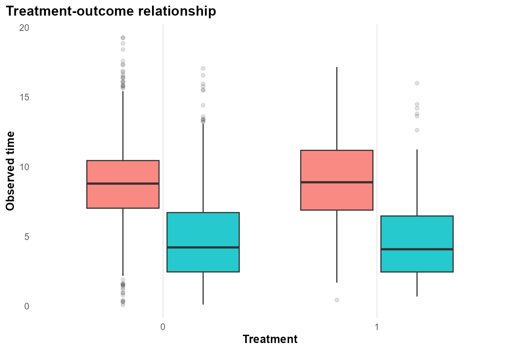
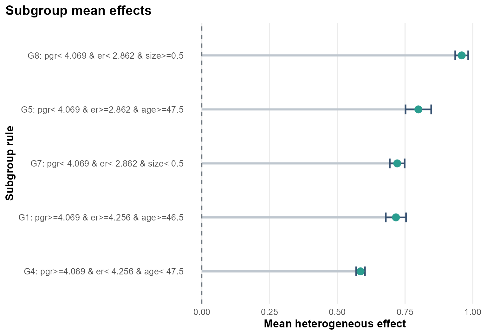
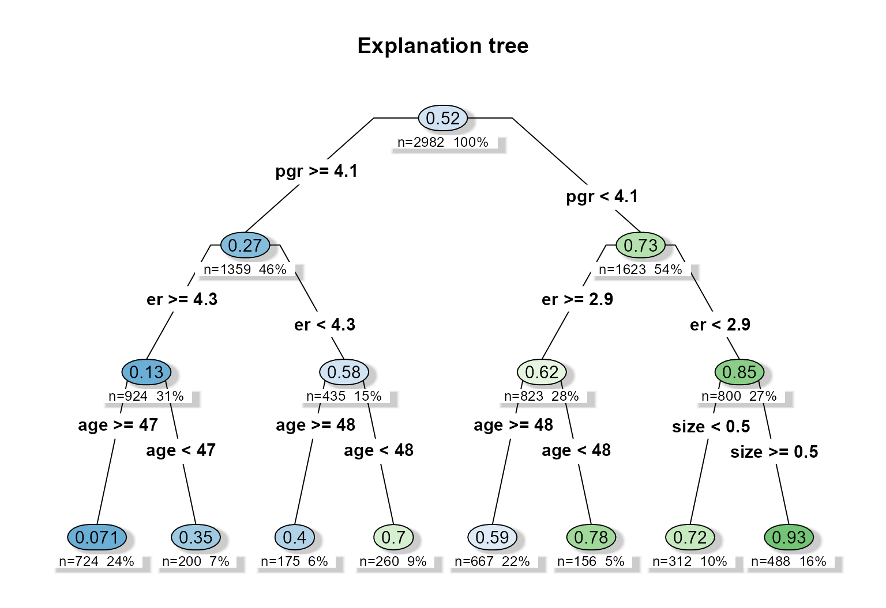
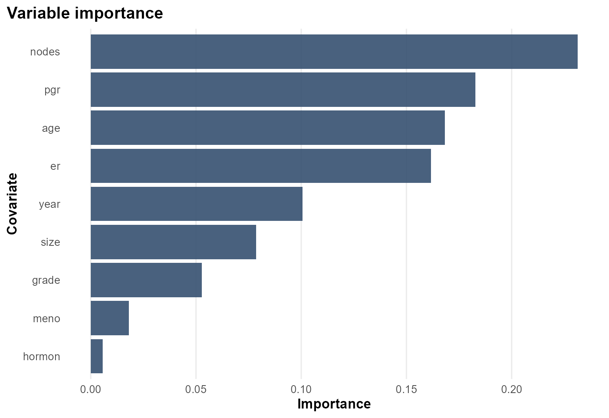

Background
survival::rotterdam is a richer oncology survival
dataset than veteran, with tumor biology and treatment
variables that allow a more structured heterogeneity analysis.
Objective
The goal is to study whether chemotherapy benefit varies with baseline disease burden and receptor-related biomarkers.
At horizon years, the forest targets subgroup-specific survival effects summarized as RMST differences or survival-probability differences, depending on the chosen target.
Analysis setup
dat <- prepare_case_rotterdam()
fit <- fit_survival_forest(
data = dat,
time = "time",
event = "event",
treatment = "treatment",
covariates = setdiff(names(dat), c("sample_id", "time", "event", "treatment")),
sample_id = "sample_id",
horizon = 8,
seed = 123,
num_trees = 400,
tree_minbucket = 120
)
#> Warning in grf::causal_survival_forest(X = as.matrix(analysis_data[,
#> covariates, : Estimated censoring probabilities go as low as: 0.01298 - an
#> identifying assumption is that there exists a fixed positive constant M such
#> that the probability of observing an event past the maximum follow-up time is
#> at least M (i.e. P(T > horizon | X) > M). This warning appears when M is less
#> than 0.05, at which point causal survival forest can not be expected to deliver
#> reliable estimates.
#> Warning in get_scores.causal_survival_forest(forest, subset = subset,
#> debiasing.weights = debiasing.weights, : Estimated treatment propensities take
#> values very close to 0 or 1. The estimated propensities are between 0 and
#> 0.984, meaning some estimates may not be well identified.
fit$check_table
#> check_name value status
#> 1 rows_used 2982.0000000 info
#> 2 rows_dropped_missing 0.0000000 ok
#> 3 outcome_sd 3.5539427 ok
#> 4 treatment_sd 0.3958819 ok
#> 5 treatment_rate 0.1945003 info
#> 6 covariate_count 14.0000000 info
#> 7 event_rate 0.4265594 ok
#> 8 censor_rate 0.5734406 info
#> 9 horizon 8.0000000 info
fit$subgroup_table
#> subgroup rule n effect_mean effect_low
#> 1 G1 pgr>=4.069 & er>=4.256 & age>=46.5 260 0.7163655 0.6789034
#> 2 G4 pgr>=4.069 & er< 4.256 & age< 47.5 667 0.5857752 0.5695050
#> 3 G5 pgr< 4.069 & er>=2.862 & age>=47.5 156 0.7991407 0.7517246
#> 4 G7 pgr< 4.069 & er< 2.862 & size< 0.5 312 0.7210948 0.6936052
#> 5 G8 pgr< 4.069 & er< 2.862 & size>=0.5 488 0.9591277 0.9351884
#> effect_high
#> 1 0.7538275
#> 2 0.6020454
#> 3 0.8465568
#> 4 0.7485845
#> 5 0.9830670Design view

The interpretation is observational: baseline clinical and tumor features are used to adjust treatment comparisons and to discover effect modifiers.
Treatment and observed time

The treatment-outcome panel gives a first sense of follow-up scale and censoring.
Heterogeneous effect summary

Compared with the simpler survival example, the Rotterdam case produces a more layered subgroup structure. The estimated effects vary across receptor-related and prognostic strata.
Explanation tree
plot_effect_tree(fit)
The explanation tree is useful here because it turns a
high-dimensional survival forest into a compact rule system involving
pgr, er, age, and
size.
Variable importance

The importance ranking confirms that biologically meaningful covariates drive most of the heterogeneity in this example.